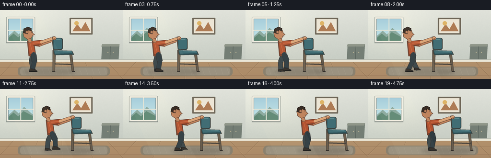
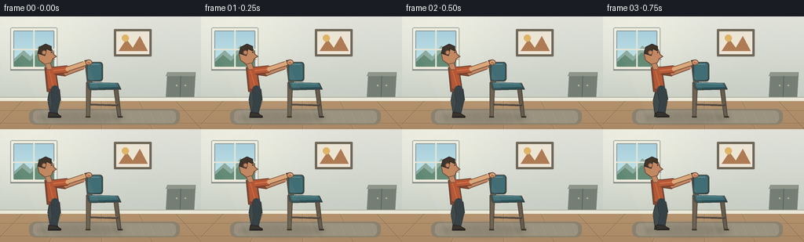

CODING AGENTS AS PIXEL WORLD MODELS
traex/GPT-5.6-Sol · motion_rationality_0057
点击播放 · 原生 RGB 像素
逐轮保存的候选
回放视频、检查图与代码变化。
每份候选均可单独播放。实际图片检查记录在下方工具轨迹中。
候选 01播放与检查图
点击播放 · 原生 RGB 像素


展开代码变化
--- 上一保存版本
+++ 本次保存版本
@@ -0,0 +1,247 @@
+from pathlib import Path
+import math
+import numpy as np
+from PIL import Image, ImageDraw, ImageFilter
+import artifact_io
+
+W, H, N = 256, 144, 20
+S = 4
+SW, SH = W*S, H*S
+ROOT = Path(__file__).resolve().parent
+rng = np.random.default_rng(57)
+
+
+def sc(v):
+ return int(round(v*S))
+
+def pts(seq):
+ return [(sc(x), sc(y)) for x, y in seq]
+
+def ellipse(d, box, fill, outline=None, width=1):
+ d.ellipse(tuple(sc(x) for x in box), fill=fill, outline=outline, width=sc(width) if outline else 1)
+
+def polygon(d, p, fill, outline=None, width=1):
+ d.polygon(pts(p), fill=fill)
+ if outline:
+ d.line(pts(list(p)+[p[0]]), fill=outline, width=sc(width), joint='curve')
+
+def line(d, p, fill, width, joint='curve'):
+ d.line(pts(p), fill=fill, width=sc(width), joint=joint)
+
+def rounded(d, box, radius, fill, outline=None, width=1):
+ d.rounded_rectangle(tuple(sc(x) for x in box), radius=sc(radius), fill=fill,
+ outline=outline, width=sc(width) if outline else 1)
+
+def limb(d, p0, p1, color, width, edge=None):
+ # outlined rounded limb segment
+ if edge:
+ line(d, [p0, p1], edge, width+2)
+ line(d, [p0, p1], color, width)
+ ellipse(d, (p0[0]-width/2, p0[1]-width/2, p0[0]+width/2, p0[1]+width/2), color)
+ ellipse(d, (p1[0]-width/2, p1[1]-width/2, p1[0]+width/2, p1[1]+width/2), color)
+
+
+def make_background():
+ # warm daylight room with subtle plaster and floor gradients
+ yy, xx = np.mgrid[0:SH, 0:SW]
+ wall = np.empty((SH, SW, 3), dtype=np.float32)
+ top = np.array([224, 226, 218.], dtype=np.float32)
+ bot = np.array([199, 205, 196.], dtype=np.float32)
+ t = np.clip(yy/(105*S), 0, 1)[...,None]
+ wall[:] = top*(1-t) + bot*t
+ # soft light entering from upper left
+ glow = 14*np.exp(-((xx-40*S)**2/(95*S)**2 + (yy-28*S)**2/(65*S)**2))
+ wall += glow[...,None]*np.array([1.0, .92, .68])
+ # deterministic fine plaster texture
+ noise_small = rng.normal(0, 1.0, (H, W))
+ noise_im = Image.fromarray(np.uint8(np.clip(noise_small*18+128,0,255))).resize((SW,SH), Image.Resampling.BILINEAR).filter(ImageFilter.GaussianBlur(sc(.6)))
+ noise = (np.asarray(noise_im).astype(np.float32)-128)/16
+ wall += noise[...,None]
+ wall = np.uint8(np.clip(wall,0,255))
+ im = Image.fromarray(wall, 'RGB')
+ d = ImageDraw.Draw(im)
+
+ # window recess, distant sky and tree silhouettes
+ rounded(d, (13, 14, 73, 68), 2, (238,236,224), (153,162,155), 1)
+ rounded(d, (17, 18, 69, 64), 1, (169,207,218), (122,145,149), 1)
+ # sky gradient panes
+ for y in range(sc(19), sc(64)):
+ q=(y-sc(19))/max(1,sc(45))
+ d.line([(sc(18),y),(sc(68),y)], fill=(int(164+32*q),int(205+25*q),int(220+14*q)))
+ polygon(d, [(18,54),(30,43),(39,51),(50,37),(68,53),(68,64),(18,64)], (137,168,158))
+ polygon(d, [(18,58),(28,49),(38,57),(49,46),(68,56),(68,64),(18,64)], (95,136,116))
+ line(d, [(43,18),(43,64)], (223,226,214), 2)
+ line(d, [(17,42),(69,42)], (223,226,214), 2)
+ line(d, [(13,68),(73,68)], (137,144,138), 2)
+
+ # framed abstract print high center-right
+ rounded(d, (145,16,193,51), 1, (111,103,88), None)
+ rounded(d, (148,19,190,48), .5, (236,229,213), None)
+ polygon(d, [(151,44),(161,29),(169,40),(178,25),(188,44)], (174,123,84))
+ ellipse(d, (155,23,164,32), (222,180,103))
+
+ # low sideboard at far right, stays behind action
+ polygon(d, [(213,71),(249,71),(247,106),(211,106)], (116,126,117))
+ polygon(d, [(213,71),(249,71),(247,76),(211,76)], (143,150,137))
+ line(d, [(230,76),(229,105)], (88,98,92), 1)
+ ellipse(d, (224,87,226,89), (188,181,151))
+ ellipse(d, (235,87,237,89), (188,181,151))
+ line(d, [(216,105),(215,111)], (67,73,69), 2)
+ line(d, [(244,105),(245,111)], (67,73,69), 2)
+
+ # baseboard and wood floor
+ d.rectangle((0,sc(103),SW,sc(108)), fill=(235,231,215))
+ d.line((0,sc(103),SW,sc(103)), fill=(169,174,165), width=sc(1))
+ d.rectangle((0,sc(108),SW,SH), fill=(178,145,108))
+ for y in range(sc(108), SH):
+ q=(y-sc(108))/(SH-sc(108))
+ col=(int(178-8*q),int(145-8*q),int(108-5*q))
+ d.line((0,y,SW,y), fill=col)
+ # floor boards in perspective
+ for x0 in [-80,-25,28,79,129,177,224,271,318]:
+ x1 = 128 + (x0-128)*1.34
+ line(d, [(x0,108),(x1,144)], (137,108,79), .55)
+ line(d, [(x0+1,108),(x1+1.3,144)], (199,167,127), .35)
+ for y in [120,136]:
+ line(d, [(0,y),(256,y)], (148,116,85), .5)
+ # soft rug anchors action
+ rounded(d, (37,118,229,138), 8, (139,129,110), None)
+ rounded(d, (42,120,224,136), 6, (155,146,128), None)
+ for x in range(48,222,13):
+ line(d, [(x,121),(x+5,135)], (166,157,139), .45)
+ return im
+
+BG = make_background()
+
+
+def add_shadow(im, chair_x, person_x, stride):
+ layer = Image.new('RGBA', (SW,SH), (0,0,0,0)); d=ImageDraw.Draw(layer)
+ # connected diffuse contact shadow; feet get crisp cores
+ d.ellipse((sc(person_x-20),sc(121),sc(chair_x+47),sc(137)), fill=(34,28,22,38))
+ d.ellipse((sc(chair_x-5),sc(125),sc(chair_x+43),sc(133)), fill=(28,23,18,42))
+ layer=layer.filter(ImageFilter.GaussianBlur(sc(3.2)))
+ im=Image.alpha_composite(im.convert('RGBA'),layer)
+ return im.convert('RGB')
+
+
+def draw_chair(d, x, tilt=0.0):
+ # side-view dining chair; coherent rigid body translated as one object
+ wood_dark=(73,67,60); wood=(105,92,75); wood_hi=(147,125,96)
+ fabric=(65,109,116); fabric_dark=(43,77,83); fabric_hi=(100,145,148)
+ # rear leg rises into back post, front leg planted
+ polygon(d, [(x-1,84),(x+5,84),(x+3,128),(x-1,128)], wood, wood_dark, 1)
+ polygon(d, [(x+34,92),(x+39,92),(x+43,128),(x+39,128)], wood, wood_dark, 1)
+ # lower cross brace
+ line(d, [(x+3,112),(x+40,113)], wood_dark, 3)
+ line(d, [(x+5,111),(x+38,112)], wood_hi, 1)
+ # back uprights and upholstered back
+ polygon(d, [(x-3,56),(x+2,55),(x+7,91),(x+1,92)], wood, wood_dark, 1)
+ rounded(d, (x-1,58,x+20,83), 4, fabric_dark, wood_dark, 1)
+ rounded(d, (x+1,59,x+18,81), 3, fabric, None)
+ line(d, [(x+4,61),(x+15,61)], fabric_hi, 1)
+ # seat, with bright top lip
+ polygon(d, [(x,84),(x+39,85),(x+43,93),(x+3,94)], fabric_dark, wood_dark, 1)
+ polygon(d, [(x+2,84),(x+38,85),(x+40,90),(x+4,91)], fabric, None)
+ line(d, [(x+5,85),(x+36,86)], fabric_hi, 1)
+ # feet caps/contact points
+ line(d, [(x-2,128),(x+4,128)], (53,49,45), 2)
+ line(d, [(x+39,128),(x+45,128)], (53,49,45), 2)
+
+
+def draw_person_and_chair(im, chair_x, phase, amount):
+ d=ImageDraw.Draw(im)
+ # skeleton follows chair, leaning into the push
+ hip=(chair_x-43,93)
+ shoulder=(chair_x-48,68)
+ headc=(chair_x-53,48)
+ # stride shrinks at start/end as speed eases
+ speed_factor = max(.20, math.sin(math.pi*amount)**0.55)
+ stride = 9*math.sin(phase)*speed_factor
+ lift1 = max(0, math.sin(phase))*3.0*speed_factor
+ lift2 = max(0, -math.sin(phase))*3.0*speed_factor
+ # foot targets, knees bend naturally opposite each other
+ foot_near=(hip[0]+stride,128-lift1)
+ foot_far=(hip[0]-stride,128-lift2)
+ knee_near=((hip[0]+foot_near[0])/2+4,108-2*max(0,math.sin(phase)))
+ knee_far=((hip[0]+foot_far[0])/2-3,109-2*max(0,-math.sin(phase)))
+ edge=(46,48,50); pants_far=(55,67,71); pants=(46,59,64)
+ shoe=(48,43,38); sole=(27,28,28)
+ skin=(191,132,93); skin_hi=(218,164,119); shirt_dark=(129,66,43); shirt=(177,82,48); shirt_hi=(202,104,65)
+ hair=(56,44,36)
+
+ # far leg and shoe, behind torso/chair
+ limb(d, hip, knee_far, pants_far, 9, edge)
+ limb(d, knee_far, (foot_far[0],foot_far[1]-3), pants_far, 8, edge)
+ polygon(d, [(foot_far[0]-4,foot_far[1]-5),(foot_far[0]+4,foot_far[1]-4),(foot_far[0]+9,foot_far[1]),(foot_far[0]-5,foot_far[1])], shoe, sole, 1)
+
+ # far pushing arm, visible above the chair
+ far_sh=(shoulder[0]-1, shoulder[1]+1)
+ far_el=(chair_x-27,72)
+ far_hand=(chair_x+1,62)
+ limb(d, far_sh, far_el, shirt_dark, 7, (101,55,40))
+ limb(d, far_el, (chair_x-5,64), skin, 5, (112,75,57))
+ ellipse(d, (far_hand[0]-4,far_hand[1]-3,far_hand[0]+4,far_hand[1]+4), skin, (112,75,57), 1)
+
+ # rear silhouette of torso, forward lean explicit
+ polygon(d, [(shoulder[0]-6,shoulder[1]-3),(shoulder[0]+7,shoulder[1]-4),
+ (hip[0]+7,hip[1]+4),(hip[0]-8,hip[1]+3)], shirt_dark, (91,56,45), 1)
+ # shirt main panel and hem
+ polygon(d, [(shoulder[0]-4,shoulder[1]-2),(shoulder[0]+6,shoulder[1]-3),
+ (hip[0]+5,hip[1]),(hip[0]-6,hip[1])], shirt, None)
+ line(d, [(hip[0]-6,hip[1]),(hip[0]+5,hip[1])], (105,57,43), 2)
+ line(d, [(shoulder[0]-1,shoulder[1]),(hip[0],hip[1]-3)], shirt_hi, 1)
+
+ # neck, head profile, nose and ear (facing right)
+ polygon(d, [(headc[0]-2,58),(headc[0]+5,57),(shoulder[0]+4,68),(shoulder[0]-3,68)], skin, (112,75,57), 1)
+ # face profile with nose pointing toward motion
+ face=[(headc[0]-8,39),(headc[0]+2,37),(headc[0]+8,42),(headc[0]+10,48),
+ (headc[0]+14,51),(headc[0]+9,54),(headc[0]+7,59),(headc[0]-1,61),(headc[0]-8,56),(headc[0]-10,47)]
+ polygon(d, face, skin, (102,71,55), 1)
+ polygon(d, [(headc[0]-10,47),(headc[0]-8,39),(headc[0],35),(headc[0]+7,38),(headc[0]+7,44),(headc[0]+1,41),(headc[0]-1,50)], hair, (39,34,30), 1)
+ ellipse(d, (headc[0]-5,43,headc[0]+1,49), skin, (111,76,58), 1)
+ ellipse(d, (headc[0]+6.5,45,headc[0]+8,46.5), (45,39,34))
+ line(d, [(headc[0]+9,55),(headc[0]+12,54.5)], (115,67,55), .7)
+
+ # chair rigid body (occludes far hand/arm naturally)
+ draw_chair(d, chair_x)
+
+ # near arm overlays chair top: hand remains fixed to top rail every frame
+ near_sh=(shoulder[0]+5,shoulder[1]+1)
+ near_el=(chair_x-25,67)
+ grip=(chair_x+2,58.5)
+ limb(d, near_sh, near_el, shirt, 8, (101,55,40))
+ line(d, [near_sh,near_el], shirt_hi, 2)
+ limb(d, near_el, (chair_x-4,60), skin_hi, 5, (112,75,57))
+ ellipse(d, (grip[0]-4.3,grip[1]-3.4,grip[0]+4.3,grip[1]+3.7), skin_hi, (112,75,57), 1)
+ # curled fingers visibly wrap over chair back
+ line(d, [(chair_x,58),(chair_x+4,59.5)], (133,86,65), 1)
+ line(d, [(chair_x,60),(chair_x+4,61)], (133,86,65), .7)
+
+ # near leg in foreground
+ limb(d, (hip[0]+2,hip[1]), knee_near, pants, 10, edge)
+ limb(d, knee_near, (foot_near[0],foot_near[1]-3), pants, 8, edge)
+ polygon(d, [(foot_near[0]-5,foot_near[1]-6),(foot_near[0]+3,foot_near[1]-5),
+ (foot_near[0]+10,foot_near[1]-1),(foot_near[0]+10,foot_near[1]+1),(foot_near[0]-6,foot_near[1]+1)], shoe, sole, 1)
+ line(d, [(foot_near[0]-4,foot_near[1]),(foot_near[0]+10,foot_near[1])], (25,25,25), 1)
+
+
+def render(i):
+ # smooth start and stop over five seconds; about 63 px rightward travel
+ t=i/(N-1)
+ amount=t*t*(3-2*t)
+ chair_x=111 + 63*amount
+ # approximately 2.2 strides, phase locked to traveled distance rather than time
+ phase=-0.45 + amount*math.pi*4.4
+ person_x=chair_x-43
+ im=BG.copy()
+ im=add_shadow(im,chair_x,person_x,phase)
+ draw_person_and_chair(im,chair_x,phase,amount)
+ # gentle sun wash unifies layers
+ overlay=Image.new('RGBA',(SW,SH),(255,239,201,0)); od=ImageDraw.Draw(overlay)
+ od.polygon([(0,0),(sc(78),0),(sc(153),SH),(sc(65),SH)], fill=(255,244,208,10))
+ im=Image.alpha_composite(im.convert('RGBA'),overlay).convert('RGB')
+ return np.asarray(im.resize((W,H),Image.Resampling.LANCZOS),dtype=np.uint8)
+
+frames=np.stack([render(i) for i in range(N)],axis=0)
+artifact_io.save(frames, ROOT)
+print(f"saved {len(frames)} RGB frames: {frames.shape}, range={frames.min()}..{frames.max()}")
可观测工具轨迹
实际执行的命令与返回图片。
命令 1exit 0
/bin/bash -lc "cat prompt.txt && printf '\\n---RULES---\\n' && cat GENERATION_RULES.md && printf '\\n---SPEC---\\n' && cat task_spec.json"
命令 2exit 0
/bin/bash -lc "find . -maxdepth 2 -type f -printf '%p\\n' | sort && printf '\\n--- binaries ---\\n' && command -v ffmpeg || true && command -v python3 || true"
命令 3exit 0
/bin/bash -lc 'cat artifact_io.py'
命令 4exit 0
/bin/bash -lc "cat > generate.py <<'PY'
from pathlib import Path
import math
import numpy as np
from PIL import Image, ImageDraw, ImageFilter
import artifact_io
W, H, N = 256, 144, 20
S = 4
SW, SH = W*S, H*S
ROOT = Path(__file__).resolve().parent
rng = np.random.default_rng(57)
def sc(v):
return int(round(v*S))
def pts(seq):
return [(sc(x), sc(y)) for x, y in seq]
def ellipse(d, box, fill, outline=None, width=1):
d.ellipse(tuple(sc(x) for x in box), fill=fill, outline=outline, width=sc(width) if outline else 1)
def polygon(d, p, fill, outline=None, width=1):
d.polygon(pts(p), fill=fill)
if outline:
d.line(pts(list(p)+[p[0]]), fill=outline, width=sc(width), joint='curve')
def line(d, p, fill, width, joint='curve'):
d.line(pts(p), fill=fill, width=sc(width), joint=joint)
def rounded(d, box, radius, fill, outline=None, width=1):
d.rounded_rectangle(tuple(sc(x) for x in box), radius=sc(radius), fill=fill,
outline=outline, width=sc(width) if outline else 1)
def limb(d, p0, p1, color, width, edge=None):
# outlined rounded limb segment
if edge:
line(d, [p0, p1], edge, width+2)
line(d, [p0, p1], color, width)
ellipse(d, (p0[0]-width/2, p0[1]-width/2, p0[0]+width/2, p0[1]+width/2), color)
ellipse(d, (p1[0]-width/2, p1[1]-width/2, p1[0]+width/2, p1[1]+width/2), color)
def make_background():
# warm daylight room with subtle plaster and floor gradients
yy, xx = np.mgrid[0:SH, 0:SW]
wall = np.empty((SH, SW, 3), dtype=np.float32)
top = np.array([224, 226, 218.], dtype=np.float32)
bot = np.array([199, 205, 196.], dtype=np.float32)
t = np.clip(yy/(105*S), 0, 1)[...,None]
wall[:] = top*(1-t) + bot*t
# soft light entering from upper left
glow = 14*np.exp(-((xx-40*S)**2/(95*S)**2 + (yy-28*S)**2/(65*S)**2))
wall += glow[...,None]*np.array([1.0, .92, .68])
# deterministic fine plaster texture
noise_small = rng.normal(0, 1.0, (H, W))
noise_im = Image.fromarray(np.uint8(np.clip(noise_small*18+128,0,255))).resize((SW,SH), Image.Resampling.BILINEAR).filter(ImageFilter.GaussianBlur(sc(.6)))
noise = (np.asarray(noise_im).astype(np.float32)-128)/16
wall += noise[...,None]
wall = np.uint8(np.clip(wall,0,255))
im = Image.fromarray(wall, 'RGB')
d = ImageDraw.Draw(im)
# window recess, distant sky and tree silhouettes
rounded(d, (13, 14, 73, 68), 2, (238,236,224), (153,162,155), 1)
rounded(d, (17, 18, 69, 64), 1, (169,207,218), (122,145,149), 1)
# sky gradient panes
for y in range(sc(19), sc(64)):
q=(y-sc(19))/max(1,sc(45))
d.line([(sc(18),y),(sc(68),y)], fill=(int(164+32*q),int(205+25*q),int(220+14*q)))
polygon(d, [(18,54),(30,43),(39,51),(50,37),(68,53),(68,64),(18,64)], (137,168,158))
polygon(d, [(18,58),(28,49),(38,57),(49,46),(68,56),(68,64),(18,64)], (95,136,116))
line(d, [(43,18),(43,64)], (223,226,214), 2)
line(d, [(17,42),(69,42)], (223,226,214), 2)
line(d, [(13,68),(73,68)], (137,144,138), 2)
# framed abstract print high center-right
rounded(d, (145,16,193,51), 1, (111,103,88), None)
rounded(d, (148,19,190,48), .5, (236,229,213), None)
polygon(d, [(151,44),(161,29),(169,40),(178,25),(188,44)], (174,123,84))
ellipse(d, (155,23,164,32), (222,180,103))
# low sideboard at far right, stays behind action
polygon(d, [(213,71),(249,71),(247,106),(211,106)], (116,126,117))
polygon(d, [(213,71),(249,71),(247,76),(211,76)], (143,150,137))
line(d, [(230,76),(229,105)], (88,98,92), 1)
ellipse(d, (224,87,226,89), (188,181,151))
ellipse(d, (235,87,237,89), (188,181,151))
line(d, [(216,105),(215,111)], (67,73,69), 2)
line(d, [(244,105),(245,111)], (67,73,69), 2)
# baseboard and wood floor
d.rectangle((0,sc(103),SW,sc(108)), fill=(235,231,215))
d.line((0,sc(103),SW,sc(103)), fill=(169,174,165), width=sc(1))
d.rectangle((0,sc(108),SW,SH), fill=(178,145,108))
for y in range(sc(108), SH):
q=(y-sc(108))/(SH-sc(108))
col=(int(178-8*q),int(145-8*q),int(108-5*q))
d.line((0,y,SW,y), fill=col)
# floor boards in perspective
for x0 in [-80,-25,28,79,129,177,224,271,318]:
x1 = 128 + (x0-128)*1.34
line(d, [(x0,108),(x1,144)], (137,108,79), .55)
line(d, [(x0+1,108),(x1+1.3,144)], (199,167,127), .35)
for y in [120,136]:
line(d, [(0,y),(256,y)], (148,116,85), .5)
# soft rug anchors action
rounded(d, (37,118,229,138), 8, (139,129,110), None)
rounded(d, (42,120,224,136), 6, (155,146,128), None)
for x in range(48,222,13):
line(d, [(x,121),(x+5,135)], (166,157,139), .45)
return im
BG = make_background()
def add_shadow(im, chair_x, person_x, stride):
layer = Image.new('RGBA', (SW,SH), (0,0,0,0)); d=ImageDraw.Draw(layer)
# connected diffuse contact shadow; feet get crisp cores
d.ellipse((sc(person_x-20),sc(121),sc(chair_x+47),sc(137)), fill=(34,28,22,38))
d.ellipse((sc(chair_x-5),sc(125),sc(chair_x+43),sc(133)), fill=(28,23,18,42))
layer=layer.filter(ImageFilter.GaussianBlur(sc(3.2)))
im=Image.alpha_composite(im.convert('RGBA'),layer)
return im.convert('RGB')
def draw_chair(d, x, tilt=0.0):
# side-view dining chair; coherent rigid body translated as one object
wood_dark=(73,67,60); wood=(105,92,75); wood_hi=(147,125,96)
fabric=(65,109,116); fabric_dark=(43,77,83); fabric_hi=(100,145,148)
# rear leg rises into back post, front leg planted
polygon(d, [(x-1,84),(x+5,84),(x+3,128),(x-1,128)], wood, wood_dark, 1)
polygon(d, [(x+34,92),(x+39,92),(x+43,128),(x+39,128)], wood, wood_dark, 1)
# lower cross brace
line(d, [(x+3,112),(x+40,113)], wood_dark, 3)
line(d, [(x+5,111),(x+38,112)], wood_hi, 1)
# back uprights and upholstered back
polygon(d, [(x-3,56),(x+2,55),(x+7,91),(x+1,92)], wood, wood_dark, 1)
rounded(d, (x-1,58,x+20,83), 4, fabric_dark, wood_dark, 1)
rounded(d, (x+1,59,x+18,81), 3, fabric, None)
line(d, [(x+4,61),(x+15,61)], fabric_hi, 1)
# seat, with bright top lip
polygon(d, [(x,84),(x+39,85),(x+43,93),(x+3,94)], fabric_dark, wood_dark, 1)
polygon(d, [(x+2,84),(x+38,85),(x+40,90),(x+4,91)], fabric, None)
line(d, [(x+5,85),(x+36,86)], fabric_hi, 1)
# feet caps/contact points
line(d, [(x-2,128),(x+4,128)], (53,49,45), 2)
line(d, [(x+39,128),(x+45,128)], (53,49,45), 2)
def draw_person_and_chair(im, chair_x, phase, amount):
d=ImageDraw.Draw(im)
# skeleton follows chair, leaning into the push
hip=(chair_x-43,93)
shoulder=(chair_x-48,68)
headc=(chair_x-53,48)
# stride shrinks at start/end as speed eases
speed_factor = max(.20, math.sin(math.pi*amount)**0.55)
stride = 9*math.sin(phase)*speed_factor
lift1 = max(0, math.sin(phase))*3.0*speed_factor
lift2 = max(0, -math.sin(phase))*3.0*speed_factor
# foot targets, knees bend naturally opposite each other
foot_near=(hip[0]+stride,128-lift1)
foot_far=(hip[0]-stride,128-lift2)
knee_near=((hip[0]+foot_near[0])/2+4,108-2*max(0,math.sin(phase)))
knee_far=((hip[0]+foot_far[0])/2-3,109-2*max(0,-math.sin(phase)))
edge=(46,48,50); pants_far=(55,67,71); pants=(46,59,64)
shoe=(48,43,38); sole=(27,28,28)
skin=(191,132,93); skin_hi=(218,164,119); shirt_dark=(129,66,43); shirt=(177,82,48); shirt_hi=(202,104,65)
hair=(56,44,36)
# far leg and shoe, behind torso/chair
limb(d, hip, knee_far, pants_far, 9, edge)
limb(d, knee_far, (foot_far[0],foot_far[1]-3), pants_far, 8, edge)
polygon(d, [(foot_far[0]-4,foot_far[1]-5),(foot_far[0]+4,foot_far[1]-4),(foot_far[0]+9,foot_far[1]),(foot_far[0]-5,foot_far[1])], shoe, sole, 1)
# far pushing arm, visible above the chair
far_sh=(shoulder[0]-1, shoulder[1]+1)
far_el=(chair_x-27,72)
far_hand=(chair_x+1,62)
limb(d, far_sh, far_el, shirt_dark, 7, (101,55,40))
limb(d, far_el, (chair_x-5,64), skin, 5, (112,75,57))
ellipse(d, (far_hand[0]-4,far_hand[1]-3,far_hand[0]+4,far_hand[1]+4), skin, (112,75,57), 1)
# rear silhouette of torso, forward lean explicit
polygon(d, [(shoulder[0]-6,shoulder[1]-3),(shoulder[0]+7,shoulder[1]-4),
(hip[0]+7,hip[1]+4),(hip[0]-8,hip[1]+3)], shirt_dark, (91,56,45), 1)
# shirt main panel and hem
polygon(d, [(shoulder[0]-4,shoulder[1]-2),(shoulder[0]+6,shoulder[1]-3),
(hip[0]+5,hip[1]),(hip[0]-6,hip[1])], shirt, None)
line(d, [(hip[0]-6,hip[1]),(hip[0]+5,hip[1])], (105,57,43), 2)
line(d, [(shoulder[0]-1,shoulder[1]),(hip[0],hip[1]-3)], shirt_hi, 1)
# neck, head profile, nose and ear (facing right)
polygon(d, [(headc[0]-2,58),(headc[0]+5,57),(shoulder[0]+4,68),(shoulder[0]-3,68)], skin, (112,75,57), 1)
# face profile with nose pointing toward motion
face=[(headc[0]-8,39),(headc[0]+2,37),(headc[0]+8,42),(headc[0]+10,48),
(headc[0]+14,51),(headc[0]+9,54),(headc[0]+7,59),(headc[0]-1,61),(headc[0]-8,56),(headc[0]-10,47)]
polygon(d, face, skin, (102,71,55), 1)
polygon(d, [(headc[0]-10,47),(headc[0]-8,39),(headc[0],35),(headc[0]+7,38),(headc[0]+7,44),(headc[0]+1,41),(headc[0]-1,50)], hair, (39,34,30), 1)
ellipse(d, (headc[0]-5,43,headc[0]+1,49), skin, (111,76,58), 1)
ellipse(d, (headc[0]+6.5,45,headc[0]+8,46.5), (45,39,34))
line(d, [(headc[0]+9,55),(headc[0]+12,54.5)], (115,67,55), .7)
# chair rigid body (occludes far hand/arm naturally)
draw_chair(d, chair_x)
# near arm overlays chair top: hand remains fixed to top rail every frame
near_sh=(shoulder[0]+5,shoulder[1]+1)
near_el=(chair_x-25,67)
grip=(chair_x+2,58.5)
limb(d, near_sh, near_el, shirt, 8, (101,55,40))
line(d, [near_sh,near_el], shirt_hi, 2)
limb(d, near_el, (chair_x-4,60), skin_hi, 5, (112,75,57))
ellipse(d, (grip[0]-4.3,grip[1]-3.4,grip[0]+4.3,grip[1]+3.7), skin_hi, (112,75,57), 1)
# curled fingers visibly wrap over chair back
line(d, [(chair_x,58),(chair_x+4,59.5)], (133,86,65), 1)
line(d, [(chair_x,60),(chair_x+4,61)], (133,86,65), .7)
# near leg in foreground
limb(d, (hip[0]+2,hip[1]), knee_near, pants, 10, edge)
limb(d, knee_near, (foot_near[0],foot_near[1]-3), pants, 8, edge)
polygon(d, [(foot_near[0]-5,foot_near[1]-6),(foot_near[0]+3,foot_near[1]-5),
(foot_near[0]+10,foot_near[1]-1),(foot_near[0]+10,foot_near[1]+1),(foot_near[0]-6,foot_near[1]+1)], shoe, sole, 1)
line(d, [(foot_near[0]-4,foot_near[1]),(foot_near[0]+10,foot_near[1])], (25,25,25), 1)
def render(i):
# smooth start and stop over five seconds; about 63 px rightward travel
t=i/(N-1)
amount=t*t*(3-2*t)
chair_x=111 + 63*amount
# approximately 2.2 strides, phase locked to traveled distance rather than time
phase=-0.45 + amount*math.pi*4.4
person_x=chair_x-43
im=BG.copy()
im=add_shadow(im,chair_x,person_x,phase)
draw_person_and_chair(im,chair_x,phase,amount)
# gentle sun wash unifies layers
overlay=Image.new('RGBA',(SW,SH),(255,239,201,0)); od=ImageDraw.Draw(overlay)
od.polygon([(0,0),(sc(78),0),(sc(153),SH),(sc(65),SH)], fill=(255,244,208,10))
im=Image.alpha_composite(im.convert('RGBA'),overlay).convert('RGB')
return np.asarray(im.resize((W,H),Image.Resampling.LANCZOS),dtype=np.uint8)
frames=np.stack([render(i) for i in range(N)],axis=0)
artifact_io.save(frames, ROOT)
print(f\"saved {len(frames)} RGB frames: {frames.shape}, range={frames.min()}..{frames.max()}\")
PY
python3 generate.py
ls -lh pixels.npz index.html inspection.png transition_check.png frames/00.png frames/19.png"命令 5exit 0
/bin/bash -lc "python3 - <<'PY'
import numpy as np
from PIL import Image
from pathlib import Path
fs=np.stack([np.asarray(Image.open(f'frames/{i:02d}.png')) for i in range(20)])
print('shape/dtype:',fs.shape,fs.dtype)
print('unique frame hashes:',len({f.tobytes() for f in fs}))
mad=np.abs(fs[1:].astype(int)-fs[:-1].astype(int)).mean((1,2,3))
print('adjacent MAD:',np.round(mad,2).tolist())
print('all modes RGB:',all(Image.open(f'frames/{i:02d}.png').mode=='RGB' for i in range(20)))
print('artifacts:',[(p,Path(p).stat().st_size) for p in ['pixels.npz','index.html','inspection.png','transition_check.png']])
PY"保存候选 1 份；完成命令 5 次；可验证图片返回 0 张。原始 API 响应与完整日志保留在本地。